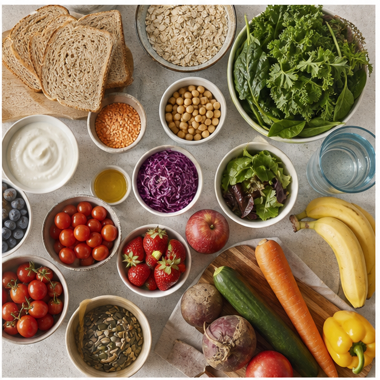
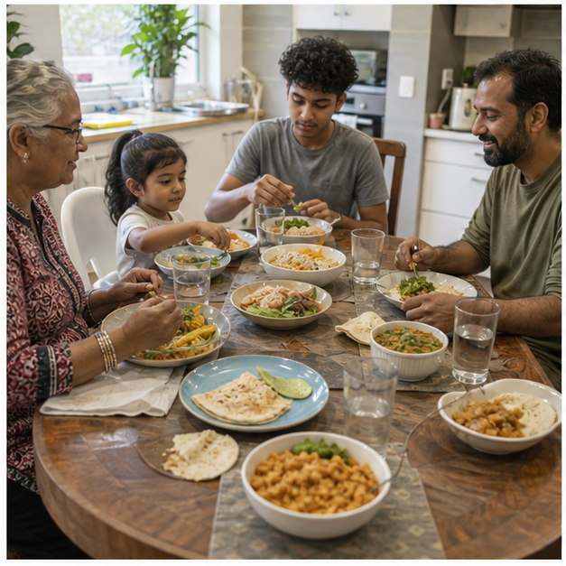
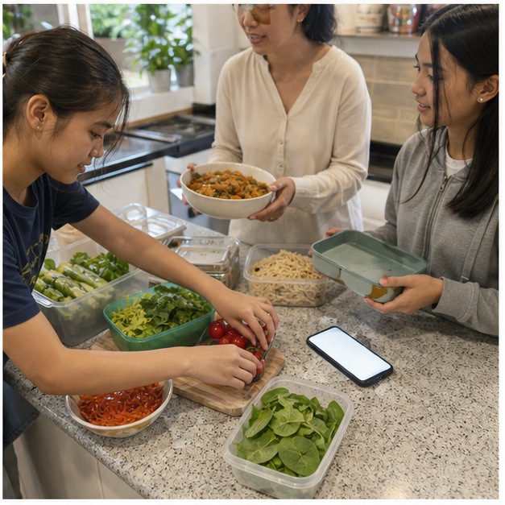

Class presentation
Module 4 — 8-slide lesson deck
Use the deck to introduce the three connected ideas, pause for decisions and hand evidence into the learning packages.
{kind=link}
Section 4.1
Active non-nutrients and food variety
Learning intention: Investigate how fibre, water and naturally occurring plant compounds contribute to healthy eating patterns, and explain why variety matters more than chasing one supposed superfood.
Success looks like
- I can distinguish nutrients from other food components that support body functions.
- I can explain how fibre and water support digestion using an accurate cause-and-effect chain.
- I can justify a varied food choice without making a cure, detox or superfood claim.
More than the six nutrients
Foods contain nutrients such as carbohydrate, protein, fat, vitamins and minerals, but they also contain water, dietary fibre and many naturally occurring plant compounds. These components do not all fit the classroom list of six nutrients, yet they can still influence digestion, hydration, colour, flavour and the way a food behaves. Calling them active non-nutrients means they can have effects in the body; it does not mean they are medicines or that more is always better.

Fibre works through the digestive system
Dietary fibre is the part of plant food that is not fully broken down in the small intestine. Some fibre adds bulk and helps material move through the bowel, while other fibre is fermented by microorganisms in the large intestine. Fibre-rich patterns usually include vegetables, fruit, legumes, wholegrain foods, nuts and seeds. Increasing fibre suddenly without enough fluid may be uncomfortable, so the practical decision is gradual variety with water rather than a fibre supplement chosen from a social-media claim.
Water supports connected processes
Water is needed for transport, temperature regulation and chemical reactions throughout the body. It also works with fibre to support normal bowel function. Water comes from drinks and from foods such as fruit, vegetables, soups and yoghurt. Needs vary with weather, activity, health and the individual, so thirst, access to water and the context matter. A brightly marketed drink is not automatically a better hydration choice merely because it contains added vitamins or an athletic image.
Colour can signal variety, not a health guarantee
Plant colours come from different pigments and compounds. Choosing a range of plant foods can broaden the mix of fibre, vitamins, minerals, flavours and textures in an eating pattern. Colour is a useful planning prompt, but it is not an exact nutrient calculator: two red foods are not nutritionally identical, and a single purple or green product cannot cancel the rest of a pattern. The strongest claim students can make is that variety increases the chance of obtaining a useful mix of food components.
Whole patterns beat superfood stories
The word superfood is mainly a marketing term, not a category in the Australian Guide to Healthy Eating. Health is shaped by patterns across time, along with factors such as sleep, movement, access, culture and medical needs. A familiar frozen vegetable, canned legume or seasonal fruit can contribute just as meaningfully as an expensive imported ingredient. Evidence-based food selection compares the whole option, the amount, frequency, cost and purpose instead of ranking foods as morally good or bad.
A practical variety decision
Suppose a lunch is white bread, cheese and water. Rather than rejecting it, a student can identify what is already useful and add variety for a purpose: wholegrain bread may add fibre, tomato or grated carrot may add colour and texture, and fruit may broaden the food-group mix. The best redesign also considers allergies, affordability, taste, storage and what the person will actually eat. A defensible decision links each change to evidence and context, not to promises of detoxing or preventing a named disease.
Equivalent pathway — no video required
Equivalent pathway: trace what variety contributes
Purpose prompt: Look for two different ways a varied selection can support digestion or hydration without relying on a superfood claim.
Name only the foods visible in the overhead spread. Trace one fibre-rich food, one water-containing food and two differently coloured plant foods to the section explanations, remembering that water is a nutrient and variety does not prove a superfood claim.
Learning package 4.10/10 + response
Use each explanation to repair your thinking as you go. All work saves only in this browser on this device.
Knowledge checks
Long response
Response scaffold
- Describe the lunch neutrally and identify what it already contributes.
- Identify one fibre, water or plant-variety gap supported by the section.
- Propose two changes that suit the person's taste, access, cost and storage context.
- Explain the mechanism or contribution expected from each change.
- State one limit to your conclusion so the response does not overclaim.
Quality criteria
- Uses accurate fibre, water and variety concepts
- Links each redesign decision to evidence and context
- Avoids moral labels and unsupported health promises
- Explains both benefits and limits
Folio handoff: Save the before-and-after lunch comparison and its two evidence statements as formative learning evidence under Folio > Food-choice reasoning. Open My folio.
0/10 checks saved · long response still needs detail
Resume this packageSection 4.2
Nutrition across the lifecycle
Learning intention: Explain why food and nutrient needs change across life stages and use context, rather than stereotypes, to adapt a food choice.
Success looks like
- I can identify factors that alter energy and nutrient needs across life stages.
- I can explain why two people in the same age group may still have different needs.
- I can adapt a meal for a stated context without diagnosing or prescribing.
Needs change because bodies and lives change
Food needs are not fixed from childhood to older age. Growth, body size, activity, pregnancy, breastfeeding, ageing, illness and recovery can alter energy, protein, vitamin, mineral, fluid or texture needs. A life stage is therefore a starting point for investigation, not a complete description of a person. The responsible question is not ‘What should all teenagers eat?’ but ‘What evidence about this person and context matters for the decision?’

Adolescence combines growth with independence
During adolescence, growth and development can increase demand for energy and nutrients, while school, sport, work, sleep and increasing independence shape when and what students eat. Iron, calcium, protein and a varied pattern are often important areas of attention, but individual requirements differ. Skipping food to match an online body ideal or copying another person's supplement routine is not a sound response. Food selection should support learning, activity, growth and enjoyment without shame.
Adult needs depend on more than age
Adult energy needs can vary with occupation, movement, body composition, pregnancy, breastfeeding and health. A person doing sustained physical work may have a different meal pattern from someone with a less active day, yet both still benefit from variety and adequate hydration. Pregnancy and breastfeeding involve particular nutrition considerations, but a Year 9 food designer should use an approved brief and public guidance rather than offer clinical advice. Personal medical questions belong with an appropriate health professional.
Ageing can change the design problem
Older adults may have lower energy needs while still needing nutrient-dense food. Appetite, taste, chewing, swallowing, mobility, medicines, social connection and access to shopping or cooking can all influence selection. A smaller serve that is easy to handle and rich in useful food components may suit one person, while another older adult may need no texture modification at all. Age alone never proves inability; the design must respond to stated needs, not stereotypes.
Reference values guide groups, not diagnoses
Australian Nutrient Reference Values provide evidence-based reference points for population groups. They help governments and professionals plan and assess diets, but they are not a simple personal prescription generated from age alone. Students can use broad guidance to compare design choices, while recognising uncertainty and individual variation. A classroom meal analysis should not claim to diagnose a deficiency or guarantee that a person's exact needs have been met.
Adapt with a reasoned design chain
A strong lifecycle adaptation follows a chain: read the brief, identify the stated need, select a relevant food or design feature, explain how it responds, and check practicality and acceptability. For example, a portable yoghurt, fruit and oat option may help a busy adolescent access food between commitments, while a softer lentil soup may suit an older person only if the brief identifies texture and handling as needs. The same recipe is not automatically suitable because two users share an age label.
Equivalent pathway — no video required
Equivalent pathway: lifecycle design case comparison
Purpose prompt: Look for the stated need in each case and the evidence that would justify adapting the food.
Use the multigenerational meal image to separate observation from assumption. Then apply the written lifecycle case cards in Applied activity 4.2, adapting the base meal only from stated needs and circling information that would require confirmation.
Learning package 4.20/10 + response
Use each explanation to repair your thinking as you go. All work saves only in this browser on this device.
Knowledge checks
Long response
Response scaffold
- Summarise each person's stated life stage and context without stereotypes.
- Identify one relevant nutrition or practical need in each case.
- Select one food or design feature that could respond to each need.
- Explain the reasoned design chain for both adaptations.
- Mark one unknown in each case as requiring confirmation and explain why it matters.
Quality criteria
- Separates life-stage guidance from individual evidence
- Uses accurate cause-and-effect reasoning
- Avoids diagnosis, prescription and stereotypes
- Checks practicality, preference and safety
Folio handoff: Save the two-case comparison and highlighted confirm-before-design notes under Folio > User needs and constraints. Open My folio.
0/10 checks saved · long response still needs detail
Resume this packageSection 4.3
Personal, social, cultural and digital influences
Learning intention: Analyse how interacting influences shape food selection and use a pause-check-decide process to make a reasoned choice.
Success looks like
- I can classify influences without treating any one influence as automatically good or bad.
- I can explain how two or more influences interact in a realistic choice.
- I can test a digital food claim against source, evidence and personal context.
Food choice is a system, not a personality test
People select food through a mixture of hunger, taste, habits, culture, identity, family routines, time, cost, availability, skills, health needs, marketing and technology. One choice does not prove that a person is disciplined, careless, healthy or unhealthy. Analysing the system reduces blame and makes design more useful: if time and transport are the main constraints, simply telling someone to ‘choose better’ does not change the conditions shaping the choice.

Personal influences include real priorities
Personal influences include sensory preferences, appetite, values, knowledge, cooking confidence, allergies, ethical priorities and previous experiences. These factors can conflict. A student might value sustainability but have limited money, or enjoy a family food that does not match a current online trend. Good food reasoning does not erase identity or pleasure; it identifies the purpose of the choice and negotiates priorities using evidence.
Social and cultural settings shape what feels normal
Families, friends, celebrations, religion, community and cultural traditions influence ingredients, meal timing, sharing and meaning. Culture is not a fixed checklist: people within the same culture make different choices, and traditions change over time. A respectful designer asks what the food means to the intended user and avoids labelling an unfamiliar dish as unhealthy on appearance alone. Sharing food can support belonging as well as provide nutrition.
The food environment changes the available choice
Price, shop location, school timetables, transport, kitchen access and product placement affect what is convenient or possible. Digital delivery platforms add another layer by controlling which options appear first, how discounts are framed and how quickly a purchase can be made. These features are not neutral, but users still have agency. A systems view asks which options were visible, affordable and practical at that moment before judging the final selection.
Digital persuasion uses attention shortcuts
Influencers and brands may use attractive images, urgency, discount codes, testimonials, before-and-after stories or simplified claims. A paid partnership or gifted product can create a commercial interest, even when the presenter seems relatable. A large following is not the same as nutrition expertise. Before acting, check who created the message, what they want the audience to do, what evidence is supplied, what is missing and whether the claim fits the person's actual needs.
Pause, check, decide
A practical decision routine is pause, check, decide. Pause long enough to name the purpose and the influences pressing on the choice. Check reliable evidence such as the ingredient list, nutrition information panel, Australian guidance and stated user needs. Decide on an option that is workable now, then reflect without shame. For a bubble-tea purchase, this could mean considering serve size, additions, frequency, cost and enjoyment rather than calling the drink forbidden or pretending marketing has no effect.
Equivalent pathway — no video required
Equivalent pathway: influence detective photo study
Purpose prompt: Identify at least four influences in the scene and decide which two are interacting most strongly.
Observe the family, friend, food objects, reusable container and blank phone without inventing motives. Then use the written fictional sponsored post in Applied activity 4.3 to map personal, social, cultural, environmental and digital influences around one decision.
Learning package 4.30/10 + response
Use each explanation to repair your thinking as you go. All work saves only in this browser on this device.
Knowledge checks
Long response
Response scaffold
- Describe the choice and its purpose in neutral language.
- Identify at least three influences from different categories.
- Explain one interaction between two of those influences.
- Check one relevant source of product or guidance evidence.
- Justify a workable decision and acknowledge one reasonable alternative.
Quality criteria
- Explains interaction rather than listing influences
- Uses evidence beyond popularity or appearance
- Respects culture, preference and access
- Avoids blame, shame and absolute claims
Folio handoff: Save the influence map and pause-check-decide justification under Folio > Influences on selection. Open My folio.
0/10 checks saved · long response still needs detail
Resume this packageEnd-of-module review
Check, repair and save
- Revisit Active non-nutrients and food varietyContinue
- Revisit Nutrition across the lifecycleContinue
- Revisit Personal, social, cultural and digital influencesContinue
Open this module’s Applied Learning Activities · Open its media pathways · Keep selected evidence in My folio